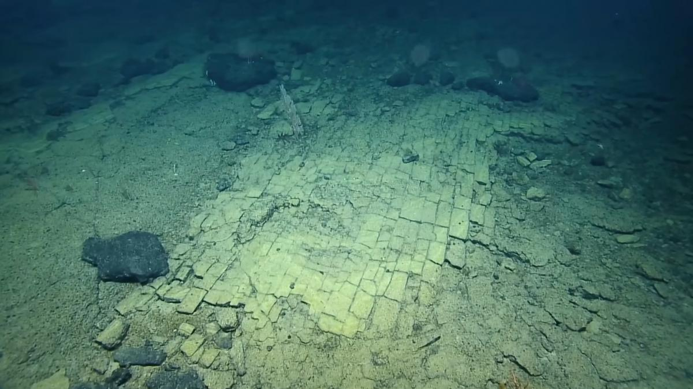
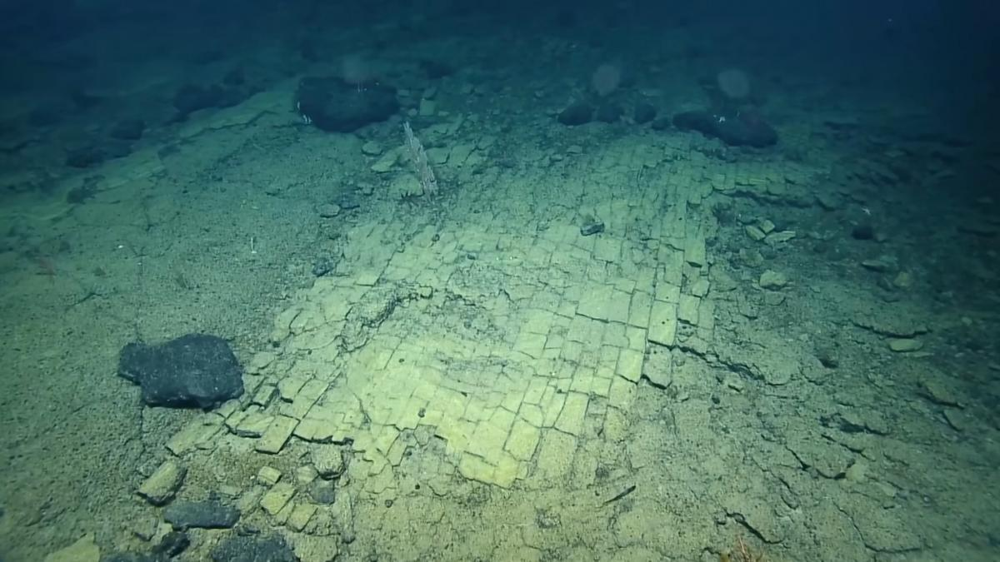

ARGONAUTA
 


Descripción
El argonauta (Argonauta argo), conocido también como "nautilo papel" o "pulpo pelágico", es uno de los cefalópodos más enigmáticos de los mares tropicales y subtropicales. Este maestro del engaño, perteneciente a la familia Argonautidae, ha fascinado a naturalistas desde Aristóteles por su extraordinaria estrategia reproductiva y su concha calcárea que parece robada de un molusco ancestral. Las hembras, significativamente más grandes que los machos (pueden alcanzar 30 cm frente a los diminutos 2 cm de sus compañeros), secretan una delicada estructura en forma de barca que no es una verdadera concha sino un incubador flotante para sus huevos, una adaptación única en el reino animal.
Distribución y hábitat
Los argonautas son criaturas estrictamente pelágicas que habitan las capas superficiales de los océanos (generalmente entre 0-200 metros de profundidad), distribuidos en aguas tropicales y templadas de todo el mundo. Prefieren zonas de convergencia de corrientes donde el plancton se concentra, desde el Mediterráneo hasta el Pacífico sur, evitando áreas costeras. Estudios con marcadores satelitales han revelado que realizan migraciones verticales diarias, ascendiendo por la noche para alimentarse y descendiendo durante el día para evitar depredadores.
Lo extraordinario es su capacidad para controlar activamente su flotabilidad: al regular la cantidad de aire atrapado en su "falsa concha", pueden mantenerse a profundidades específicas sin esfuerzo natatorio. En el Mar de Cortés, se han observado agregaciones estacionales de cientos de individuos siguiendo blooms de plancton, formando espectaculares "flotas" de argonautas que navegan las corrientes.
Alimentación
La dieta del argonauta consiste principalmente en pequeños organismos pelágicos: larvas de peces, copépodos, medusas y otros moluscos que capturan con sus dos tentáculos especializados (los dorsales, mucho más largos que los otros seis). Su técnica de caza es un prodigio de eficiencia energética: se mantienen casi inmóviles en la columna de agua, extendiendo sus filamentosos tentáculos cubiertos de mucus pegajoso como redes vivientes.
Cuando detectan una presa, la envuelven rápidamente y la llevan hacia su pico quitinoso, capaz de perforar exoesqueletos duros. Estudios de contenidos estomacales han demostrado que seleccionan presas con alto contenido lipídico, cruciales para mantener su metabolismo en aguas abiertas donde la comida es escasa. Durante periodos de abundancia, pueden almacenar nutrientes en glándulas especiales para tiempos de escasez.
Características físicas
La morfología del argonauta es una maravilla de adaptación a la vida pelágica. Las hembras poseen unos lóbulos en los tentáculos dorsales que secretan carbonato de calcio formando esa "concha" en espiral que las hace famosas - en realidad una estructura porosa y liviana (98% aire) que funciona como cámara de cría y dispositivo de flotación. Su cuerpo es casi completamente transparente cuando está sumergido, con sólo los ojos y las glándulas digestivas visibles como puntos de color.
Los machos, diminutos en comparación, carecen de esta estructura pero poseen un tentáculo modificado (el hectocótilo) que se desprende durante el apareamiento para fecundar a la hembra a distancia - un fenómeno que confundió a los primeros naturalistas, quienes pensaban que era un parásito. Los ojos del argonauta, grandes y bien desarrollados, pueden detectar tanto la polarización de la luz como mínimos movimientos en aguas turbias.
Su sistema de propulsión por chorro (como otros cefalópodos) está perfeccionado para movimientos precisos más que para velocidad, permitiéndoles maniobrar con elegancia en aguas abiertas. La superficie exterior de su "concha" está cubierta de microestructuras que difractan la luz, haciéndola casi invisible desde abajo contra la superficie iluminada.
Comportamiento
A diferencia de muchos cefalópodos, los argonautas son criaturas principalmente solitarias que solo interactúan para aparearse. Pasan la mayor parte de su tiempo flotando pasivamente cerca de la superficie, ajustando periódicamente la cantidad de aire en su concha para mantener profundidad. Cuando son amenazados, pueden expulsar rápidamente el aire y sumergirse, o liberar una nube de tinta como distracción.
Un comportamiento fascinante es su interacción con la superficie marina: en condiciones de calma, se han observado hembras "pegando" el borde de su concha a la tensión superficial del agua, creando una burbuja de aire estable que les permite descansar sin gastar energía. Durante tormentas, descienden a mayores profundidades donde las olas no perturban su frágil estructura.
Reproducción
El ciclo reproductivo del argonauta es uno de los más extraordinarios del océano. Los machos, que viven solo unos pocos meses, desarrollan un tentáculo especializado (el hectocótilo) que contiene paquetes de esperma. Durante el apareamiento, este tentáculo se desprende y migra autónomamente dentro del manto de la hembra, donde puede permanecer viable durante semanas hasta que ella decide fertilizar sus huevos.
La hembra deposita hasta 100,000 huevos diminutos en su cámara calcárea, donde los ventila con movimientos rítmicos y los protege de depredadores durante 4-8 semanas hasta la eclosión. Las crías, miniaturas perfectas de los adultos, son inmediatamente independientes y comienzan a secretar su propia concha a los pocos días. Las hembras pueden vivir hasta 2 años, reproduciéndose múltiples veces, mientras que los machos mueren poco después de transferir su hectocótilo.
Defensa y depredadores
A pesar de sus estrategias de camuflaje, los argonautas enfrentan numerosos depredadores: atunes, delfines, peces luna y tortugas marinas que pueden detectar sus delicadas siluetas. Su principal defensa es la transparencia y la capacidad de liberar tinta oscura que confunde a los atacantes.
Las tormentas representan otra amenaza: las olas pueden destrozar sus frágiles conchas, dejándolas vulnerables. En los últimos años, la acidificación oceánica ha emergido como peligro crítico, dificultando la formación de sus estructuras calcáreas. Los plásticos flotantes son confundidos frecuentemente con sus conchas, llevando a enredos fatales.
Datos curiosos
- Las hembras pueden reparar su concha dañada secretando nuevo carbonato de calcio.
- Los argonautas inspiraron el mito griego de Jasón y los Argonautas.
- Su "concha" fue clasificada erróneamente como molusco fósil hasta el siglo XIX.
- Pueden ajustar el grosor de su concha según la temperatura del agua.
- Los machos son 15 veces más pequeños que las hembras - el mayor dimorfismo sexual entre cefalópodos.
Estado de conservación
Aunque no evaluado globalmente, el argonauta es considerado bioindicador de la salud de ecosistemas pelágicos. Su dependencia del carbonato de calcio lo hace especialmente vulnerable a la acidificación oceánica, con estudios mostrando deformidades en conchas en áreas con pH alterado.
Programas como "Ocean Drifters" estudian sus patrones de distribución para monitorear cambios en corrientes marinas. Estas criaturas etéreas, que han navegado los mares desde el Mioceno, siguen siendo faros de lo desconocido, recordándonos que los océanos guardan misterios que apenas comenzamos a comprender. Su supervivencia está íntimamente ligada a la nuestra, en un planeta donde cada cambio en el mar afecta a todos sus navegantes, visibles e invisibles.